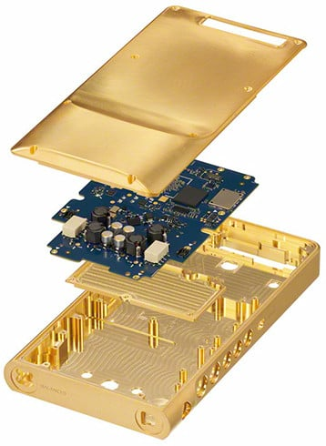

SONY에서 고급형 휴대용 플레이어를 발매했다.
자신들이 가진 음질 관련 기술을 전부 쏟아서
최상의 음질을 구현했다고 광고하는 중.
일단 전체 섀시를 황금으로 도금한 무산소 구리를 사용.
무산소 구리는 산소 함량을 극도로 줄여서
전자의 흐름을 방해하는 요인을 차단한다나 뭐라나.
아무튼 이걸 쓰면 음질의 명료함이 올라간다고 하네.
판매 가격은 글로벌 판매 버전은 천만원까지 갈 수도 있다고.

SONY에서 고급형 휴대용 플레이어를 발매했다.
자신들이 가진 음질 관련 기술을 전부 쏟아서
최상의 음질을 구현했다고 광고하는 중.
일단 전체 섀시를 황금으로 도금한 무산소 구리를 사용.
무산소 구리는 산소 함량을 극도로 줄여서
전자의 흐름을 방해하는 요인을 차단한다나 뭐라나.
아무튼 이걸 쓰면 음질의 명료함이 올라간다고 하네.
판매 가격은 글로벌 판매 버전은 천만원까지 갈 수도 있다고.
재즈, 클래식만 들어?
락메탈 들을땐 화력발전으로 충전해야함
화력발전 할때도 석탄 이런 안좋은거 쓰면 안되고 유기농 참숯 비장탄 이런거 써야된다
전자는 씨발 본체에서 움직이면 감전이잖아!!!
저거 예전에 나온거 아님?
PCB 트레이스도 금인가?
아스텔앤컨 4백 얼마짜리에 지금은 5백 얼마지만 4백 후반에 티아포르테 사서 들었는데 막귀라 그런지 생각보다 체감은 크진 않았는데 조금만 낮은 가격대 이어폰 쓰면 진짜 역체감이 오짐
정보)소니는 음감용 마이크로 SD카드도 만든적이 있다
원자력발전소 전기쓰면 잡음 심해진대
가능한 수력이나 풍력 태양광 쓰라더라
포터블 DAC DAP이 무슨 개뻘짓인지 설명하면
SNR이 높다는 스펙딸 약팔이 자체도 별 의미가 없지만
그걸 들고 밖에서 소음이 40dB 50dB 쏟아지는 환경을 돌아다님
대중교통에서 마스크 안쓰고 외출 후 손발도 안 씻는데
반도체 공정용 초순수를 마시면 감기에 안걸린다 믿는거임
음향 취미있는 애들이 수력 발전, 화력발전 이야기하고 지네 집앞에 송전탑 설치하는것처럼
돈지랄할것도 많고 신경쓸것도 많은데
저거하나면 이어폰이랑 선만 챙기면 되잖아 사는 사람은 살거 같음
4000달러와 7달러 오디오 케이블 비교, 차이 없었다
https://quasarzone.com/bbs/qn_hardware/views/1990243
아스텔앤컨 요즘도 핫하냐?
저런 돈지랄도 턱턱 해낼 수 있는 재력 갖고싶다
??? : 시계를 성능으로 사냐
쩐다 ㅋ 수력발전소 전기로만 충전해야겠네